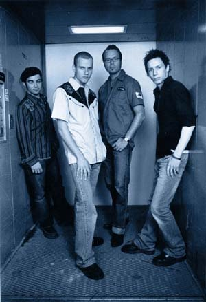
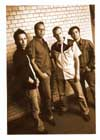
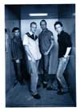
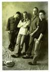
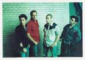
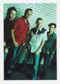

пресс-релиз
В последние несколько лет Норвежская блюзовая сцена поистине расцвела. В появившейся на горизонте Эйрик Бергене Бенд (Eirik Bergene Band) мы различаем черты новой отличной блюзовой группы. Вскормленные в благоприятной атмосфере главной Норвежской блюзовой точки - клуба Muddy Waters в Осло, это - группа молодых талантов, о которых вы, несомненно, еще не раз услышите в будущем.
Солист группы - юный асс губной гармоники Эйрик Бергене (Eirik Bergene). Сейчас ему 20 лет и он начал играть на гармонике всего три года назад, но услышав его гармонику, трудно не назвать ее потрясающей. Эйрик начал с успешной футбольной карьеры, благодаря чему стал очень много ездить по стране. Но все это время он не переставал заниматься гармоникой, мечтая занять заслуженное место рядом с такими норвежскими мастерами, как Arne Fjeld Rasmussen, Richard Gjems и Eirek Sandnes. Несмотря на то, что вступил в игру не так давно, он влетел в высшую лигу гармонистов со скоростью ракеты. Эйрик - большой поклонник старых мастеров Little Walter, Walter Horton, James Cotton и George "Harmonica" Smith, но также он черпает вдохновение у относительно современных гармонистов William Clarke, Kim Wilson, Mark Ford и Paul DeLay. Это разнообразие музыкальных влияний дало ему солидную базу по части правильного звука и техники, что дает мощный толчок, который запустит его в музыкальное будущее.
Группа Эйрика Бергене состоит из молодых талантов, которые являются не только хорошими инструменталистами, но в первую и главную очередь - командными игроками. Имея весьма стилистически-разнообразную музыкальную подготовку, все они долго затачивали свои "топоры" в клубе Muddy Waters, выступая с известными норвежскими и не только блюзовыми музыкантами.
Хокун Хэйе (Hakon Hoye) - гитарист старой школы в традициях Pee Wee Crayton, Johnny Guitar Watson и Bill Jennings. Он был частью норвежской блюзовой сцены на протяжении немалых лет, филигранно оттачивая удары своего "топора" в таких группах, как Tonsberg Bluesband, Ramblues, Honey Tones, Amund Maarud Band и т.д.
В свои 19 барабанщик Александр Петтерсен (Alexander Pettersen) - давно не новичок и играет уже много лет. Стал активным членом "Блюзового Сообщества Осло", когда ему было всего 12. Работа барабанщиком хаус-бенда клуба Muddy Waters в Осло сделала его весьма опытным музыкантом. Эксперты, которые долго наблюдали за ним, пришли к выводу, что Петтерсен действительно имеет все шансы войти в элиту лучших норвежских барабанщиков. А вдвоем с басистом Пером Тубро (Per Tobro) они образуют отличную свингующую ритм-секцию. Сам Пер - не только выдающийся исполнитель на контрабасе и электрическом басу, но и автор замечательных песен. В частности, он выступил соавтором нескольких номеров на прошлогодней пластинке Амунда Морюда (Amund Maarud) "Ripped, Stripped & Southern Fried".
Вместе они - команда энтузиастов, которая сделает убойный вечер для любой аудитории. Так что, если вы вдруг окажетесь по соседству ..... не стесняйтесь ..... приходите в свой местный клуб и присоединяйтесь к празднику!!!
Осло - Норвегия - февраль 2004 г.
Основано на норвежском
пресс-релизе Eric Malling (Blue Mood Records)
для ежегодного съезда Норвежского
Блюзового Союза в 2003-м году.
 |
 |
 |
 |
 |
{kind=link}
{kind=link}
{kind=link}
{kind=link}
{kind=link}